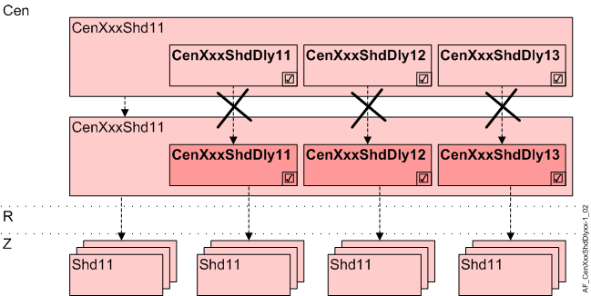

Central facade shading products delay (CenFcdShdDly11...13)
Overview
Application function "Central facade shading delay 11...13" (CenFcdShdDly11...13) distributes central facade functions with a time delay to distribute the electrical startup load (blinds) to multiple, phased startup groups to command an entire group.
The AFs are used to distribute shading functions to room segments, but not to distribute data to subordinate central functions.

Cen | Central functions |
CenXxxShd11 | Central facade shading for automatic 11 |
CenXxxShdDly11...13 | Central facade shading delay 11...13 |
R | Room |
Z | Shading zone in room segment |
Shd11 | Shading 11, for shading and daylight use with venetian blinds or awnings, group member in a facade sector |
Function
Central commands start the first start-up group (CenFcdShd11) immediately. The delayed start groups (CenFcdShdDly11...13) start as soon as the entered delay expires.
Interface to local and superorindate functions
There are no additional BACnet objects for delayed distribution. The subordinate AFs CenFcdShdDly11...13 receive their input via internal communication from the superordinate AFs CenFcdShd11, CenGrlPrt11, CenAnnShd11, CenThPrt11.
Configuration
 objects
objects
Description | Object | Type | Default value |
|---|---|---|---|
Central facade shading delay 1...3 0...7200 [s] | CenFcdShdDly1...3 | UCnfVal | CenFcdShdDly1: 10 [s] CenFcdShdDly2: 20 [s] CenFcdShdDly3: 30 [s] |
Interface
Interface | Description | Type | Ref. | Owner |
|---|---|---|---|---|
CenOpModMstd1...3 | Manager for central operating mode delay 1...3 | GrpMaster | ● | - |
CenOpModDly1...3 | Central operating mode delay 1...3 | UCnfVal | ● | - |
Engineering and commissioning
The AFs receive the values (chart interface) from CenFcdShd11. Each change is saved in a buffer. The AFs read back the values from the buffer after the delay time expires and decodes and distributes them to the connected group members.
Note: Operating current or start-up current results in peak loads depending on the particular shading product. A delay throughout the entire runtime or a short delay must be configured accordingly.